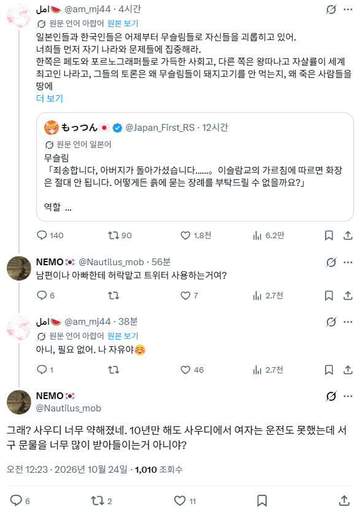

ㅋㅋㅋㅋㅋㅋㅋㅋㅋㅋ
돌리기는 진짜 최고다ㅋㅋㅋㅋㅋ
ㅋㅋㅋㅋㅋㅋㅋㅋㅋㅋㅋ
ㅋ ㅋㅋ ㅋㅋㅋ ㅋ ㅋ ㅋ잘돌리네
야ㅋㅋㅋㅋㅋ
교리 안지키면 참수던데 너도 조심해 라고하면 좋아죽겠네
어디서 여자 목소리가 담장을 넘어가나?
계정 없어지면 뎅겅 당한건가... ㅠㅠ
저러다 폭탄테러하면 오또케
이슬람은 교리상 남성 우위인지라
남자가 독실한 무슬림이면 걍 그러려니 할텐대.
여자가 독실한 무슬림?? ㄹㅇ 이해가 안 됨.
스스로 디버프를 장착 하는 것에 자부심을 느끼다니.
뭔 생각인지 진짜 궁금하긴 함.
인지부조화 때문임. 본인들도 아주 깊은 기저엔 이게 여자한테 불리한거고 자신들에게 잘못된것이란걸 알고 있을거. 근데 그걸 인정하는 순간 지금까지 살아온 인생들이 전부 부정되는 느낌을 받을거고, 게다가 앞으로는 지금까지와 아예 반대되는 방식으로 살아야할텐데, 그게 에너지나 멘탈이 엄청 필요한 일일거아냐. 그니까 걍 사는거임. 걍 살면서 '사실 이슬람은 좋은거 맞음'하고 끊임없이 자기합리화 하면서 사는거. 잘못된걸 알면서도 잘못된걸 바로잡지않고 계속살면 계속 스트레스랑 고통이 동반되니까, 오히려 그게 잘못되지 않았고 우수한거라고 본인 관념자체를 속이는겨.
배우자한테 매맞으면서 살면서도 이혼안하면서 걍 사는 사람들한테 왜 이혼안하냐고 하면 '그래도 그사람이 좋은구석도 있어~'하면서 걍 사는거랑 비슷한 결임
페미랑 결이 뭔가 비슷한듯?
모든 사상이 다 저런식으로 세뇌되는거
딱히 페미뿐만이 아님
히잡 강제로 써야하는 곳에서 겨우 벗어나서 자유 만끽할 수 있는 나라에서 히잡쓰고 다니는거 보면 이해안감
외국갔더니 '대머리야 말로 진정한 자유다' 하면서 자기머리 다 뽑고다닌다 생각해보샘.
평생을 세뇌당한건 외국간다고 사라지질 않음
내가 최근에 재밋는걸 봣는데 우리가아는 서양 동양 포함해서 갓이던 중절모던 최근까지 남자가 머리위에 모자라는걸 안쓰는게 이해가안가는 행동이였대 저 사람들 인식이 약간 저시절에 머물러있는거아냐?ㅋㅋㅋ
좆소다니면서 이직할 노력은 싫으니까 좋은구석이라도 찾아야 정신병 안걸리는거랑 비슷하지
그거는 좀다르지않냐? 좆소가 돈은 적게줘도 일하는게 편하고 압박이 없어서 다니는거잖아
워라벨 챙기는거지 나도 좆소다니는이유가 대기업 귀찮기도하고 출퇴근 자유롭고 일 거의 안함
일하는게 편하고 압박이 없으면 좆소가 아닌데?
돈도 적게주고 일하는게 힘들고 압박까지있으면 남아있을 이유가없잖아?
좆소가 아닌 곳에 취직이 가능하면 애초에 좆소를 안갔겠지?
그거있잖아 여자들중에 마조성향인애들 그런거 아냐? 지배당하고 종속당하는것을 즐기는거지
그냥 아예 뇌에 박혀있던대
고점 물려서 못파는 거랑 비슷한 거야. 그 주식이 똥인 걸 알지만 떡상할 지도 모른다는 생각으로 -80을 들고 있는 거지
평생 그렇게 살아왔으니까 모태사이비였던 사람들 탈출하는 거 보면 가족부터 아는 지인이 다 사이비인데 알아도 그거 다 버리고 탈출하기 쉽지 않다고 하더라 인간관계를 다 제로부터 시작해야하니까...
2차세계대전 종전 후에 독일 포로들 인터뷰한 게 있는데 독일 패전 직전에 항공기로 너네 졌으니까 투항하라고 삐라 그렇게 뿌렸는데 왜 항복안 했냐고 했더니 이미 진 거 알았는데도 옆에 있는 전우들을 배신할 수가 없었대
무쌍이라기보다 1대1인데
ㅋㅋㅋㅋㅋㅋㅋㅋㅋㅋㅋㅋ
미디어때문에 왕따자살율이 심각한걸로 알고있네 강도는 코쟁이들 못따라갈텐데
오나홀이 말을 해?
캬... 자랑스럽다 우리편이라 다행이다
아직 딜도 안들어갔는데?
강간당하고 명예살인 안당하게 조심해라ㅋㅋ
자살하기 vs 자살하기전에 다 참수하기
어딜 건방지게 여자가 교리에 어긋나게 공개된 장소에서 한마디 하는가?
리트윗 두개밖에 안됐는데 무쌍찍는거 맞냐?
돼지고기는 왜 아직도 안먹는거야
아직 배때지가 부른 거지
알쓸신잡) 무슬림 남성은 순금 장신구 착용 불가능
진짜 무슬림 여성 인터넷 왜 허용함?
알라의 좀 더 까다로운 선택이 필요한 시점이라 본다
ㅋㅋㅋㅋㅋㅋㅋㅋㅋㅋㅋㅋㅋ